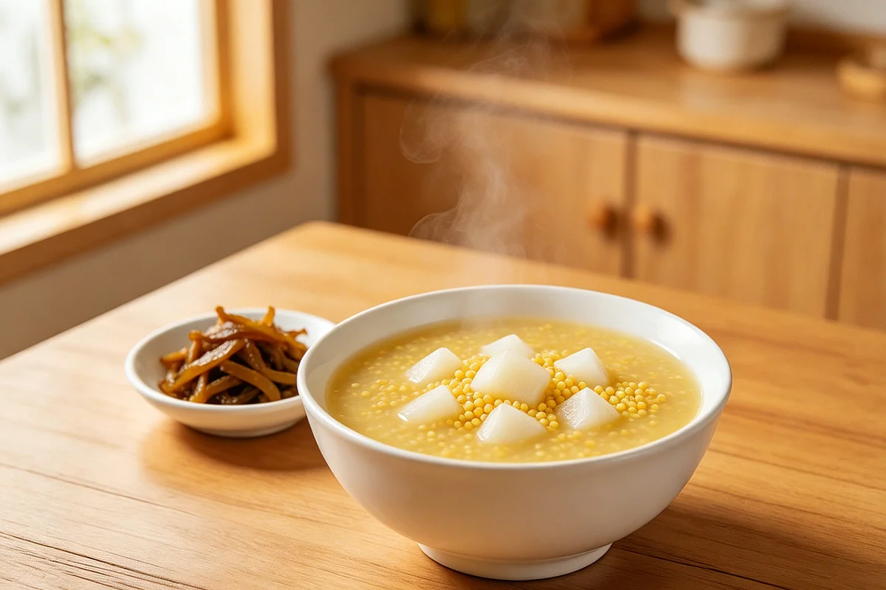

Chinese Yam and Millet Porridge: The Softest Bowl in the Northern Kitchen
There's a kind of porridge you make when you want something that won't challenge anything — not your teeth, not your digestion, not your attention. In northern China, that porridge is often made from millet and Chinese yam, simmered until both grains and root melt into each other. It's the kind of breakfast you eat in silence, staring out a window, wrapped in a sweater, the bowl warm in both hands.
Millet — xiaomi (小米) in Chinese — is one of the oldest grains cultivated in northern China. Before rice became the staple of the south, millet was what filled bowls across the Yellow River plain. It cooks faster than rice, breaks down more completely, and leaves a sweet, creamy liquid that feels different from rice congee — thinner, less starchy, with a faint nutty note at the end.

Chinese yam — shan yao (山药) — looks nothing like the orange sweet potatoes Western cooks might picture. It's a long, knobby, brown-skinned root with white sticky flesh that turns tender and almost silky when cooked. Fresh yam is seasonal and requires peeling with gloves (the raw sap can irritate skin), but dried yam slices are available year-round at Chinese groceries and work perfectly in porridge.
I first had this porridge at a small guesthouse in Shanxi province, where the owner's mother made breakfast for anyone who was up before seven. She didn't take orders. She simply put a bowl in front of you — pale yellow, steaming, with a few goji berries floating on top — and said "eat." I asked her what was in it and she said "millet and yam, what else would be in it?" as if the question itself was strange. That's how folk food works: it's not a recipe with a name. It's just what you make.
Why this combination, specifically
In Chinese folk kitchen language — the kind of talk that happens between people who've known each other for decades, not through textbooks — yam and millet are often described as a "gentle pair." Millet is said to be easy on the stomach because it breaks down quickly during cooking, leaving a thin, almost slippery broth that slides down without effort. Yam contributes a soft, mucilaginous texture that thickens the porridge naturally, without any need to stir or watch the pot constantly.
Together they create a bowl that feels like a compromise between something solid and something liquid — a texture that doesn't require much chewing but still feels like a real meal. People who find rice congee too heavy or too bland often turn to millet porridge as an alternative. And people who find their morning stomach unsettled — after travel, after illness, after a late dinner — often reach for this bowl the way you'd reach for a familiar blanket.
If you're already comfortable with simple recovery congee, yam and millet porridge sits in a similar category but with a lighter, nuttier character. Many families alternate between the two depending on the season — rice congee in deep winter, millet porridge in spring and autumn, when the mornings are cool but not freezing.
What the habit looks like at home
This isn't a dish you serve to guests. It's a dish you make for yourself, or for someone who needs a quiet morning. In Chinese households, millet porridge appears most often at breakfast, made fresh in a small pot while the rest of the family is still waking up. The cook rinses the millet, peels and dices the yam (or reaches for dried slices), adds water, and lets it simmer on low while they go about their morning routine — brushing teeth, packing bags, watering plants on the balcony.
There's no ceremony to it. The pot sits on the smallest burner, covered, barely bubbling. Every ten minutes or so the cook lifts the lid, stirs once, and puts it back. After about thirty minutes the millet has burst open and the yam pieces have softened to the point where they break apart with a light press of the spoon. At that point the porridge is done, though some families let it go another fifteen minutes for a creamier texture.
Additions that appear in different kitchens
Plain yam and millet porridge is the baseline, but variations are common and entirely regional:
- Goji berries — a small handful added in the last ten minutes for sweetness and color
- Red dates (jujube) — chopped and added early, they soften into the porridge and lend a honey-like background note
- A piece of dried tangerine peel — subtle, aromatic, used more in southern-style kitchens
- Rock sugar or honey — at the table, not during cooking, adjusted to personal taste
- Plain with a side of pickled vegetables — the most common northern breakfast pairing
None of these additions changes what the dish fundamentally is. It remains a bowl of millet and yam, the most forgiving breakfast in the Chinese kitchen repertoire.
Materials
- Millet (小米) — half a cup per person, rinsed until the water runs mostly clear
- Chinese yam (山药) — fresh, about 150 grams per person, peeled and diced, OR dried yam slices (about 50 grams)
- Water — roughly four cups per half-cup of millet, adjusted for desired thickness
- A small to medium pot with a lid
- Optional: goji berries, red dates, or tangerine peel
Steps
- Rinse the millet in a fine-mesh strainer under cold water until the water runs mostly clear. Millet is small — a regular colander will let it escape.
- If using fresh yam, peel it with a vegetable peeler while wearing gloves. The raw sap can irritate skin. Dice into small cubes about the size of your thumbnail.
- If using dried yam slices, rinse them quickly and break any large pieces in half.
- Put millet, yam, and water into the pot. Add any optional ingredients now (goji berries and red dates can go in now or later — both work).
- Bring to a gentle boil over medium heat, then immediately reduce to the lowest simmer. Cover the pot.
- Let it cook undisturbed for 20 minutes. Then stir once, scraping the bottom to prevent sticking.
- Continue simmering for another 15–25 minutes, stirring occasionally. The porridge is ready when the millet has burst open and the yam pieces break apart easily against the side of the pot.
- Serve warm. Add honey or rock sugar at the table if desired. The porridge thickens as it cools, so some families serve it slightly thinner than they'd like and let it set in the bowl.
My grandfather had another saying that stayed with me: "A lean body in old age is worth more than a thousand pieces of gold." He lived by simple habits — slow meals, quiet mornings, never eating past fullness. This porridge was the kind of food he trusted: humble, nourishing, and made without hurry.
Comfort and safety
Hot porridge can burn the mouth and throat the same way any hot liquid can. Let it sit for a few minutes before eating, especially if you're serving it to a child or someone who tends to eat quickly. Millet is naturally gluten-free, which makes this porridge accessible to many people with gluten sensitivity, but if you have celiac disease or a specific medical concern about grains, check with your healthcare professional before making it a regular part of your routine.
Fresh yam sap can cause skin irritation — mild itching or a rash — in some people. If you've never handled raw Chinese yam before, wear kitchen gloves during peeling. Once cooked, the yam is completely harmless and loses all trace of the irritating compound. Dried yam slices, widely available in Chinese grocery stores, skip this issue entirely and are the recommended starting point for anyone trying this for the first time.
Who should check with a professional first
If a healthcare professional has advised you to follow a specific diet — low-carb, low-FODMAP, diabetic meal planning — check with them before adding any new grain or root vegetable to your routine. The same caution applies during pregnancy and nursing, not because millet or yam is known to be problematic, but because any change in diet during those life stages is worth a quick conversation with someone who knows your individual situation.
People with known oxalate concerns should note that Chinese yam contains moderate levels of oxalates. If your healthcare provider has advised a low-oxalate diet, ask them about yam before including it regularly.
The Shennong Ben Cao Jing describes Chinese yam as one of the "superior" ingredients — a category of substances considered suitable for long-term daily use. Millet appears in the same classical context as a fundamental grain. I include these references as cultural and historical background, not as dietary instruction. The idea that some foods are gentle enough to eat every day is an old one, and this porridge embodies it quietly.
Referenced from Shennong Ben Cao Jing (Divine Farmer's Materia Medica)Regional variations
In the colder northern provinces — Hebei, Shanxi, Shaanxi — millet porridge is a year-round breakfast staple, sometimes made with pumpkin or sweet potato instead of yam depending on the season. In southern China the same porridge appears less frequently, and when it does, it's often thinner and served as a late-night snack rather than a morning meal. Some Cantonese kitchens add a small piece of dried tangerine peel for fragrance, a touch that northern cooks would find unusual.
For people outside China, millet is widely available in health food stores and Asian groceries. Chinese yam — fresh or dried — can be found in Chinese supermarkets under the name shan yao or sometimes labeled as "nagaimo" in Japanese groceries (though Japanese yam is a different variety with a slimier texture). Dried yam slices are the easiest starting point and store well in a sealed container for months.
If you're looking for a warm, light start to your morning and have already explored dishes like fresh ginger tea or plain rice congee, this porridge offers a different texture and flavor profile — nuttier, sweeter, with a silkiness that comes from the yam rather than from long cooking. It's not better or worse. It's just another bowl in the same tradition of food that asks nothing from you except that you sit down and eat it slowly.